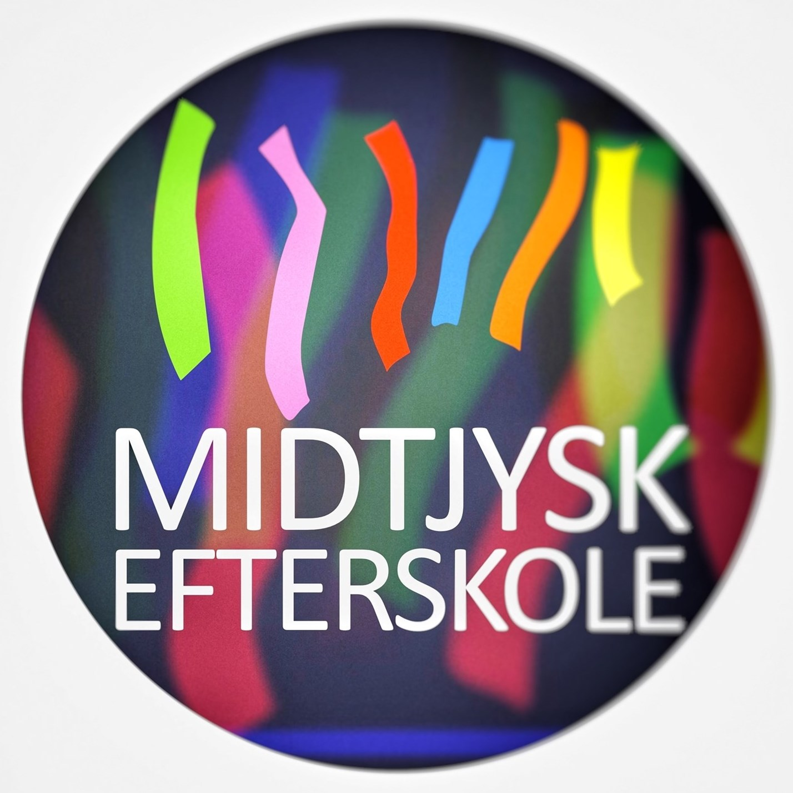
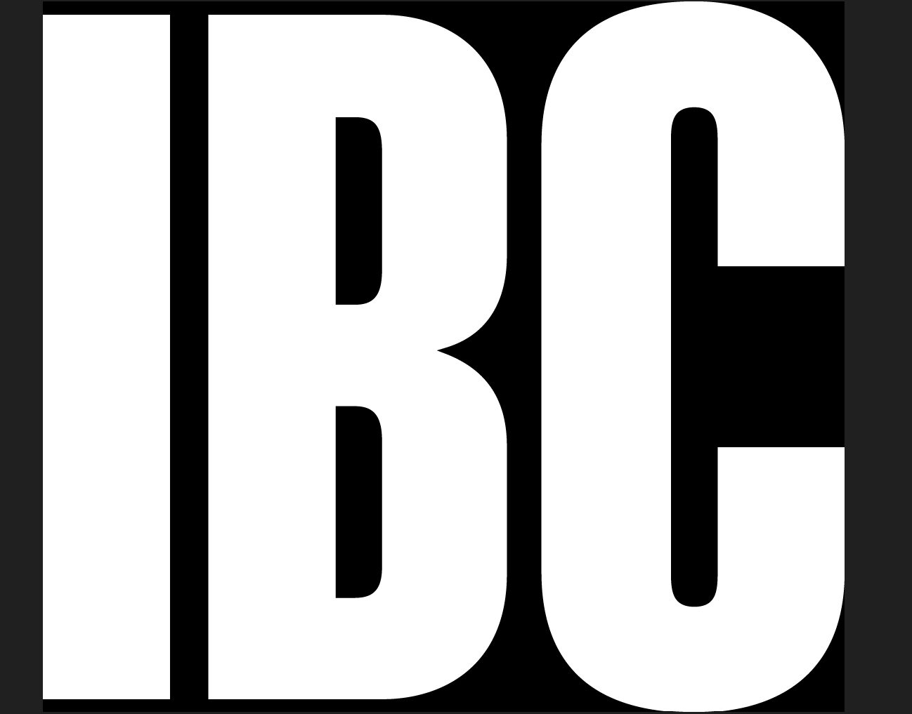
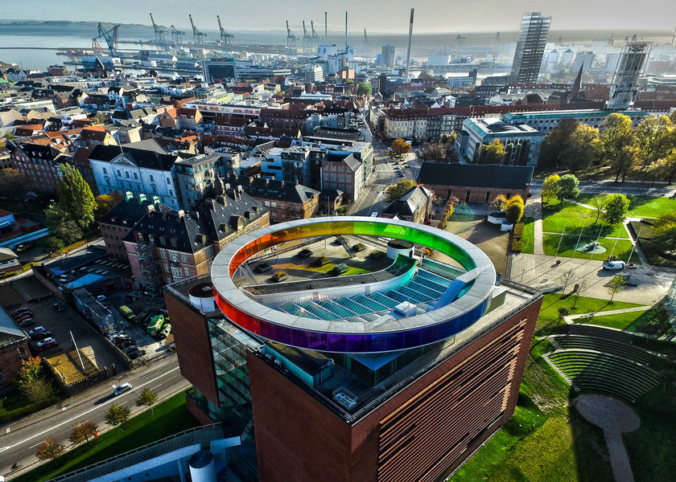

Frederik Werner Boysen
Home
About Me
My Education
Younger years
"Born and raised in Fredericia, lived in the northern part of town with my parents and older sister close to nature, club activities and insitutions. During my early years i was heavily involved with clubs and other social activities which molded me to the person i am today."
Midtjysk Efterskole

"In the year 2014 till 2015 i had the pleasure of attending Midtjysk Efterskole which is a one year boarding school. The experience of attending MJE was transformative in many ways. It provided an immersive environment where I not only learned academically but also grew as an individual. The tight-knit community of students and teachers fostered an atmosphere of camaraderie and personal development".
International Business College (HHX)

"After one year at MJE i embarked further in my education and enrolled in IBC with specialization in Global Communication. Here i learned invalueable business courses which peaked my interest in how companies function and operates. I also had the pleasure of exploring and advancing my communicative skills through language courses such as English and Spanish."
Backpacking South-East Asia
"During my gap year in 2020, my closest friends and I embarked on an unforgettable adventure touring South-East Asia. Throughout this journey, I gained valuable insights into the privilege and fortune we enjoy back home in Denmark. This adventure was more than just a vacation; it was a transformative experience that broadened my perspective and deepened my appreciation for the opportunities and comforts we often take for granted. It's a chapter of my life that I will always cherish and carry with me as a reminder of the importance of empathy, gratitude, and global awareness."
Aarhus

"In April of 2021 I moved to Aarhus to commence my educational journey at VIA University College. During my two years in Aarhus, i have gained a significant amount of personal growth, valuable knowledge, and friendships which i am confident will benefit me in my future endeavors".